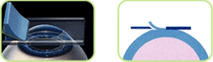
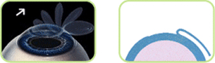
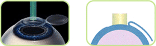
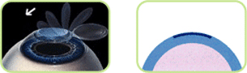
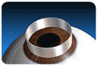
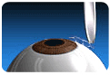
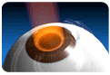
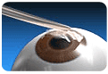

- HOME
- 시력교정
라식
엑시머 레이저의 정확성과 각막성형술의 장점을 결합시킨 근, 난시 및 원시 교정수술로 엑시머레이저 근시교정술의 단점을 보완하기 위해 개발된 제3세대 시력교정수술로 불리는 각막절삭성형술입니다.
-
라식수술 과정
라식수술 과정
-
step1 미세 각막절삭기로 각막편을 만든다  step2 각막편을 벗겨낸다.  step3 레이저를 조사하여 굴절이상을 조절한다.  step4 벗겨낸 각막편을 제자리에 덮는다. 
- 라식수술의 장점
-
- 라식수술은 회복 기간이 짧습니다. (수술 다음날 최대교정시력의 70-80%정도 회복) 점안마취하에 수술이 시행되며, 각막상피 세포를 보호하여 수술 후 통증이 극히 적고 편안합니다. 또한 수술 후 각막혼탁, 근시의 재발 등이 매우 적습니다. 양안을 동시에 수술할 수 있으며, 양안의 시력회복기간이 짧으므로 직장생활에 지장이 없습니다. 치료기간(안약점안기간)이 짧습니다.(1개월 이내) 재수술이나 추가 교정 시 수술시행이 용이합니다. 안경이나 콘택트렌즈의 불편함이나 부작용으로부터 해방되므로 보다 편리하게 삶의 질을 높일 수 있습니다
-
라식수술의 대상
- 라식수술은 만 18세 이상의 성인으로 안경이나 콘택트렌즈 착용이 어렵거나 만족을 못하는 사람은 누구나 적용대상이 될 수 있습니다. 하지만 개개인의 눈의 상태에 따라 수술을 할 수 있는 경우가 있고 그렇지 못한 경우가 있습니다.
-
검사방법 : 기능검사, 안구 촬영등
- 라식수술의 대상
-
- - 안경, 콘택트렌즈의 불편함과 부작용으로 고생하시는 분
- 양쪽 눈의 시력이 달라 불편하신 분 (짝눈)
- 미용적인 측면으로 안경이나 렌즈를 착용하기 힘드신 분
- 일반운동선수나 카메라맨, 조종사, 소방관, 경찰관 등 시력이 좋아야 하는 특수직종에 종사하는 사람들
- 운동이나 레저 즉 수영, 스쿠버, 스키, 산행 등을 즐기시는 분
- 먼지가 많고 습기가 많은 작업 환경에서 일하는 사람들
- - 안경, 콘택트렌즈의 불편함과 부작용으로 고생하시는 분
-
라식수술의 결과
- 녹내장 증상이 있는 경우, 시력손실로 기능손실이 있는 경우
-
다음날 : 수술 후 20시간 정도 지나면 각막 부종이 빠지므로, 대부분 수술 다음날부터 나안시력이 0.6~1.0 이상 나옵니다. 약간은 안개가 낀 것 같이 흐리게 보일 수도 있는데 이것은 각막 변형에 따른 자연적인 현상이며, 1~4주에 걸쳐 서서히 좋아집니다.
3~4주후 :대부분 근시재발이 이 시기에 많이 일어나며 나안 시력이 수술 전에 예상했던 최대시력까지 나옵니다. -9디옵터의 초고도 근시인 경우에는 6개월 이상 걸릴 수도 있습니다. 수술 후 생길 수 있는 야간 눈부심이나 안구건조증의 증상도 이후부터 줄어들기 시작하여 수술 후 3개월까지는 현저하게 호전됩니다.
3개월후 :나안시력과 교정시력이 모두 안정되는 시기입니다. 그러나 고도근시의 경우, 시력이 안정되기까지 6개월 이상의 시간이 걸리며, 개인에 따라 회복시기가 약간 차이가 날 수 있습니다.
- 코멘트
-
- 해오름 안과에서는 최선을 다해 고객님의 눈에 광명을 다시 찾아드리겠습니다. 번쩍번쩍! 반짝반짝!
- HOME
- 시력교정
라섹
라식수술에서 각막절편을 만들때에 발생하던 여러 문제점 때문에 새로 개발된 수술방법으로, 각막에 실질을 포함한 절편을 만드는 것이 아니라 얇은 각막의 상피만을 선택적으로 벗겨내고 레이저를 조사하는 방법입니다.
-
라섹수술 과정
라섹수술 과정
-
step1 분리할 상피세포를 원형의 칼날(Epi-trephine)을 이용해 절제한 후
특수약물(알코올)을 이용하여 각막상피를 분리시킵니다. step2 분리해낸 상피세포를 벗겨냅니다.  step3 레이져를 조사하여 각막을 연마해 냅니다.  step4 치료용 콘택트렌즈를 덮은후 수술을 종료합니다. 
- 라섹수술의 장점
-
- 장기적으로 볼 때에 근시의 재발이 적고, 안구건조증도 라식 수술에서보다 적게 발생하는 등 큰 장점을 가지고 있는 수술방법입니다. 수술 시간은 15분 가량 걸립니다.
-
라섹수술의 대상
- 라섹수술은 만 18세 이상의 성인으로 안경이나 콘택트렌즈 착용이 어렵거나 만족을 못하는 사람은 누구나 적용대상이 될 수 있습니다. 하지만 개개인의 눈의 상태에 따라 수술을 할 수 있는 경우가 있고 그렇지 못한 경우가 있습니다.
-
검사방법 : 기능검사, 안구 촬영등
- 라섹수술의 대상
-
- - 라식 수술에 다소 어려움이 있었던 환자가 주 대상이나 모든 근시, 난시, 원시도 가능
- (도수에 비해)각막 두께가 얇은 경우
- (각막 두께에 비해)도수가 높은 경우
- 권투 선수, 격투기 선수 등의 눈을 다칠 확률이 높은 분
- 라식 수술을 받기에 눈이 작은 분
- - 라식 수술에 다소 어려움이 있었던 환자가 주 대상이나 모든 근시, 난시, 원시도 가능
-
라섹수술관련Q&A
- 자주 묻는 질문들
-
Q.시력이 나빠도 라식라섹수술이 가능한가요?
A.라식라섹수술 가능여부는 각막 두께, 동공의 크기 등 사전 검사를 통해 결정이 됩니다.
Q.시력교정수술 후 화장은 언제부터 가능할까요?
A.수술 후 기초 화장품을 바르는 것은 가능하지만 색조 화장의 경우 수술 후 2주 뒤부터 해주시는 것이 좋습니다.
Q.라식라섹수술 후 염색이나 파마는 언제부터 가능한가요?
염색약이나 파마약의 경우 눈에 큰 영향을 줄 수 있기 때문에 시력교정수술을 진행하기 2주전부터 수술 후 2주까지는 염색이나 파마를 삼가해주시길 바랍니다.
- 코멘트
-
- 해오름 안과에서는 최선을 다해 고객님의 눈에 광명을 다시 찾아드리겠습니다. 번쩍번쩍! 반짝반짝!